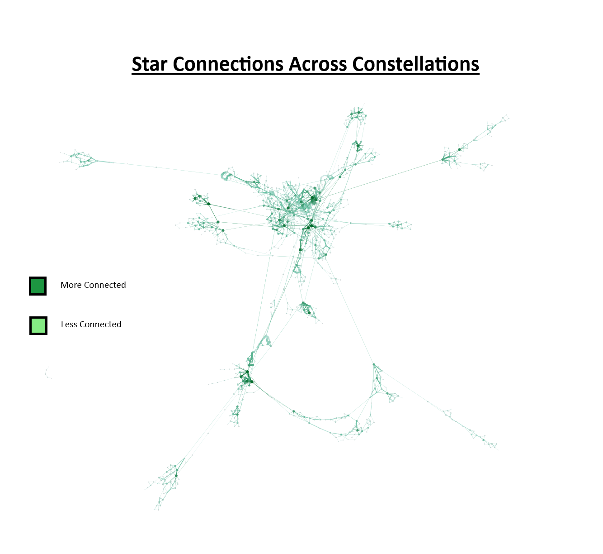

E483 / E583 · Information Visualization · Indiana University
40 sky cultures · 1,068 stars · one shared sky
People across the world, and throughout different time periods, have looked at the same night sky and told completely different stories about it. The same stars that one culture connected into a hunter, another saw as a fishing net, and another as a cardinal point or a spirit.
These constellation systems are not just astronomical records; they are windows into how different people across time and geography understood the world around them. The goal of this project is to visualize constellation data so that users can explore trends and patterns across cultures and time. So historians can see how constellation themes changed over time, astronomers can explore which stars are common across cultures, and researchers can compare how different cultures mapped the same region of sky.
Our project uses a single dataset, the constellation-lines dataset, built and maintained by our client Dr. Doina Bucur. It is an accessible, Creative Commons-licensed, documented dataset currently covering 40 sky cultures in analyzable JSON format, spanning cultures across the world and through time. Each constellation entry contains fields such as star identifiers, constellation lines, names, semantics, geographic metadata, and more.
Finding 01
The geospatial visualization allows users to observe trends across cultures and regions and to examine the semantic distributions within and across these variables, revealing how animal, human, object, and abstract themes cluster geographically.
Finding 02
The network and star map visualizations show an overview of the interconnectedness of stars, allowing for exploration of commonly used stars and large constellation networks across time, location, and cultures.
Finding 03
Prior research on over 1,500 constellation diagrams from about 50 cultures identifies common structural patterns in how stars are connected, while also showing that large variation between cultures remains. The same group of stars can represent very different things depending on the culture, meaning constellation design is influenced as much by cultural interpretation as by the arrangement of stars.
Finding 04
Visualizations that only show star connections may overlook the cultural meanings that make constellations meaningful to users. Combining geospatial, network, and star-coordinate views is necessary to answer the full set of research questions.
Current Visualizations
Three interactive views that together address our six research questions, each designed for a different analytical lens.
Design Evolution
Earlier versions of the visualizations that shaped our analytical approach and informed the final designs above.
Figure 1 · v1 · Power BI
The first geospatial prototype, built in Power BI. It established the core idea of mapping cultures to their geographic origins with semantic breakdowns by constellation type. After receiving evaluation feedback, we prioritized telling more of a story through the visualizations and transitioned to HTML to more strongly showcase geospatial insights and enable custom filtering.

Figure 2 · v1 · Gephi
The original network visualization built in Gephi, with node and edge data extracted from the main dataset to represent individual stars in constellations and the strength of connection between them. This allowed for identification of large constellations and the most and least impactful individual stars. The feedback from our client to incorporate star coordinates led us toward the interactive Kumu and star map visualizations.
The Data
Our project uses a single dataset, the constellation-lines dataset, built and maintained by our client Dr. Doina Bucur. It is an accessible, Creative Commons-licensed, documented dataset currently covering 40 sky cultures in analyzable JSON format. All source data, processing code, and visualization files are publicly available in our GitHub repository.
40
Sky Cultures
~500
Constellation Entries
1,068
Unique Stars